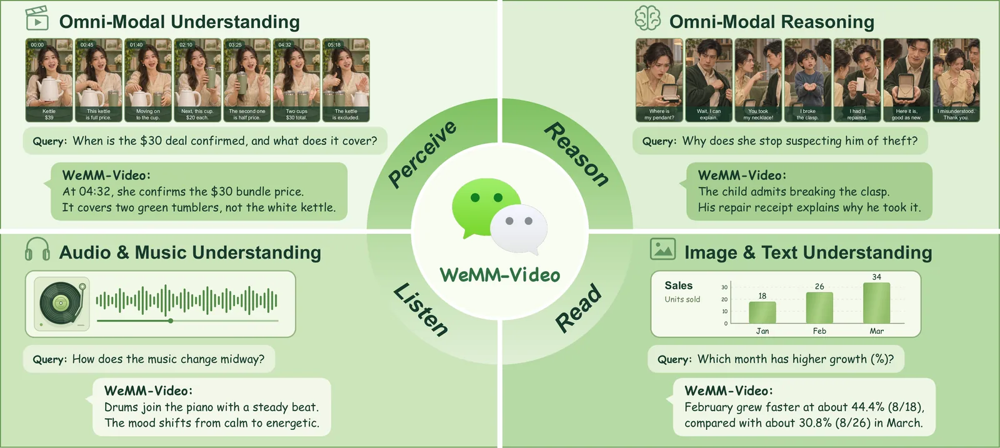
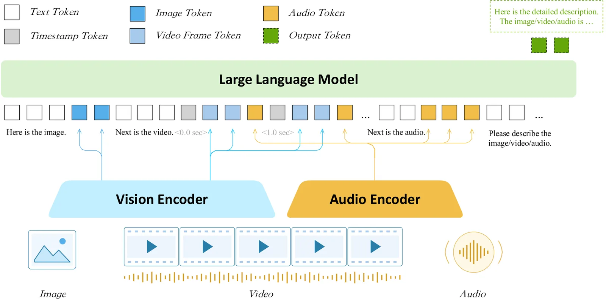
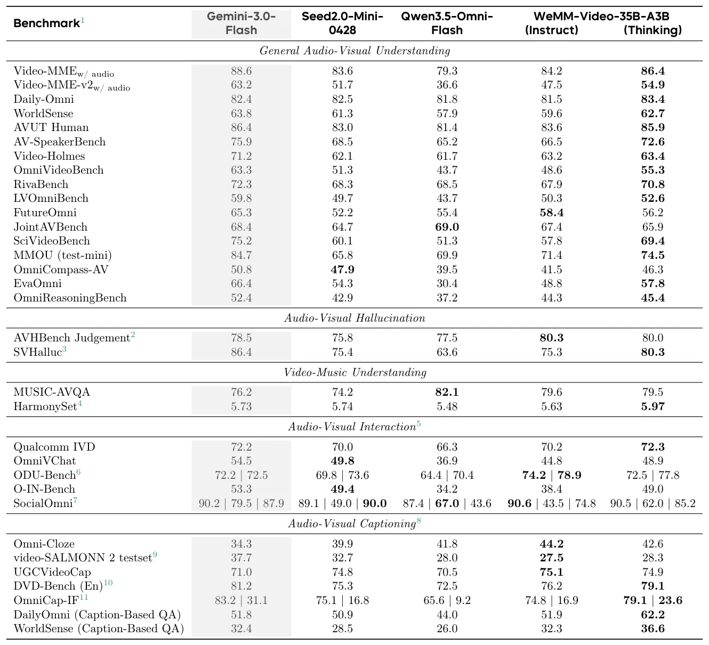

O Desafio da Percepção Omni-Modal
A compreensão de vídeo, especialmente quando acompanhada de áudio, representa um dos maiores desafios atuais na inteligência multimodal. Modelos tradicionais frequentemente falham em alinhar pistas acústicas com eventos visuais correspondentes, sofrendo com alucinações cross-modal e ignorando dinâmicas temporais finas. O WeMM-Video, desenvolvido pela Tencent e Tsinghua University, busca preencher essa lacuna com uma família de modelos bilingues (chinês e inglês) que vão de 2B a 35B parâmetros, focando na percepção conjunta áudio-visual.
O problema central não é apenas reconhecer objetos ou sons isolados, mas capturar a evolução temporal contínua e sintetizar cues visuais e acústicos através de raciocínio deliberado. Modelos open-source existentes tendem a ser frágeis em cenários reais complexos. O WeMM-Video propõe uma abordagem unificada que trata texto, imagem, áudio e vídeo dentro de um paradigma de 'pensamento híbrido', permitindo respostas diretas ou raciocínio explícito passo a passo.
Este artigo explora os mecanismos internos do WeMM-Video, desde sua arquitetura de codificadores até o pipeline de treino em três etapas. Não se trata apenas de um modelo que gera legendas, mas de um sistema projetado para mitigar alucinações através de traces de raciocínio fundamentados nos dados visuais e acústicos. A proposta é oferecer uma base sólida para pesquisa open-source que rivalize com modelos proprietários fechados.

Arquitetura: Unificando Áudio e Vídeo
A arquitetura do WeMM-Video baseia-se no design do video-SALMONN 2, recebendo entradas multimodais e produzindo saídas textuais autoregressivamente. Para as variantes de 2B, 4B e 9B, os backbones são derivados do Qwen3.5, enquanto a versão de 35B usa o Qwen3.6-35B-A3B. Os codificadores de áudio são inicializados a partir do Qwen2.5-Omni, preservando capacidades pré-treinadas de percepção acústica. A chave está na integração temporal fina entre as modalidades.
Para processamento visual, o modelo retém os codificadores nativos e mecanismos de projeção dos backbones, mantendo a compreensão prévia de imagens e vídeos. O módulo de áudio é dedicado e composto por um codificador baseado no Whisper, que extrai características acústicas de sinais amostrados a 16,000 Hz, segmentados em chunks de 30 segundos. Isso permite lidar com áudio contínuo sem perda significativa de contexto temporal.
Um componente crítico é o window-level Q-Former. Ele comprime as características extraídas pelo Whisper dentro de janelas temporais locais de 0.1 segundos. Cada janela é mapeada para um único token de áudio no espaço de entrada do LLM, resultando em 10 tokens de áudio por segundo. Essa granularidade é essencial para alinhar o áudio com a fluidez visual do vídeo. Para vídeos com áudio, tokens visuais e de áudio são intercalados em ordem cronológica, suplementados por timestamps textuais explícitos.

Corpus de Treino: 1.2 Trilhões de Tokens
A robustez do WeMM-Video depende de um corpus multimodal massivo de aproximadamente 1.2T tokens. A distribuição modal é estratégica: dados joint audio-visual (áudio e vídeo juntos) constituem 45.4% do volume total, fornecendo supervisão temporal densa para modelar dinâmicas multimodais complexas. Dados visuais puros representam 28.4%, áudio puro 23.6% e texto apenas 2.6%. Essa ênfase em dados combinados é o que diferencia o modelo de abordagens que tratam modalidades de forma isolada.
Dentro das tarefas, a legenda (captioning) responde por 37.7% dos tokens. Os autores enfatizam dois tipos complementares de legendas: finas (focadas em ações e eventos densos, como esportes e dança) e joint audio-visual (descrevendo ações visuais, diálogos e sinais acústicos ao longo de uma linha do tempo contínua). Dados de filmes, séries curtas, entrevistas e lives de comércio são escalados para criar essa riqueza contextual.
Todo o dado de captioning passa por um pipeline rigoroso de pontuação automática de qualidade, deduplicação semântica e filtragem de toxicidade. Isso garante fidelidade perceptual e diversidade. A inclusão de corpus de áudio dedicado é necessária porque o modelo base não possui percepção acústica nativa. O treino visa construir e alinhar representações acústicas com o espaço de linguagem, permitindo que o modelo 'ouça' e 'veja' simultaneamente.
Pipeline de Pós-Treinamento: OPD, MrDPO e RL
O pré-treinamento progressivo prepara o modelo para a percepção básica, mas o pós-treinamento em três etapas é crucial para o raciocínio e a estabilidade. A primeira etapa utiliza multi-teacher On-Policy Distillation (OPD). Isso envolve distilar conhecimento de modelos maiores ou mais especializados para melhorar a eficiência e a precisão das respostas, alinhando o comportamento do WeMM-Video com padrões de alta qualidade sem depender exclusivamente de dados brutos.
A segunda etapa emprega anti-repetition Multi-Round Direct Preference Optimization (MrDPO). O MrDPO é uma variação do DPO que otimiza preferências em múltiplas rodadas, com um foco específico em evitar repetições. Em tarefas de raciocínio longo, modelos tendem a entrar em loops ou repetir informações. O MrDPO penaliza explicitamente essas repetições, forçando o modelo a gerar traces de raciocínio mais coesos e informativos.
A terceira etapa é o Reinforcement Learning (RL) especialista. Diferente de um RL genérico, este é focado em capacidades específicas, como a capacidade de 'thinking' (raciocínio). Isso ajuda o modelo a aprender quando e como usar o modo de raciocínio explícito para melhorar a performance em tarefas complexas, equilibrando latência e precisão.
Resultados: SOTA Open-Source
Avaliações em mais de 120 benchmarks mostram que o WeMM-Video-35B-A3B estabelece um novo estado da arte open-source em compreensão de vídeo omni-modal. Ele supera modelos proprietários como Seed2.0-Mini-0428 e Qwen3.5-Omni-Flash em 16 de 17 benchmarks de compreensão áudio-visual geral. Embora ainda fique atrás do Gemini-3.0-Flash, a lacuna é significativamente menor do que a de outros concorrentes open-source.
O modo 'thinking' demonstrou ser vital. Ao comparar o modo instruct com o thinking no modelo de 35B, houve ganhos substanciais em tarefas de compreensão e raciocínio complexo. Isso valida a hipótese de que o raciocínio explícito ajuda o modelo a alinhar melhor as pistas multimodais e evitar erros de inferência. Modelos menores, como o 9B, também superaram o Qwen3-Omni-30B-A3B-Instruct em muitas métricas, mostrando eficiência escalável.
Além do vídeo omni-modal, o WeMM-Video mantém capacidades competitivas em áudio, vídeo mudo, imagens e texto. Isso indica que a unificação não comprometeu as capacidades monomodais do modelo base. A família de modelos oferece opções para diferentes restrições de hardware, desde o compacto 2B até o robusto 35B, todos com bilinguismo nativo chinês-inglês.

Limitações e Escopo
Apesar dos resultados impressionantes, o paper não aborda extensivamente as limitações computacionais do modo 'thinking'. A latência aumentada devido ao raciocínio passo a passo pode ser um obstáculo para aplicações em tempo real estrito. Além disso, a dependência de dados de áudio de alta qualidade e bem alinhados significa que o desempenho pode degradar em cenários com ruído severo ou áudio mal sincronizado, um ponto que não foi detalhado nos benchmarks.
O corpus de treino, embora vasto, é focado em conteúdos digitais comuns (filmes, lives, esportes). A generalização para domínios muito específicos ou científicos, onde a precisão temporal e acústica é crítica, pode exigir ajustes finos adicionais. O paper foca na performance em benchmarks padrão, mas a robustez em cenários do mundo real, com ruído e variações de qualidade, permanece como uma área para validação futura pela comunidade.
O que fica
- WeMM-Video unifica texto, imagem, áudio e vídeo em um LLM com modo 'thinking' explícito para raciocínio passo a passo.
- A arquitetura usa codificador Whisper e Q-Former para comprimir áudio em tokens temporais alinhados ao vídeo.
- O treino envolve 1.2T de tokens e pipeline de pós-treinamento com OPD, MrDPO e RL especialista.
- O modelo de 35B estabelece novo SOTA open-source, superando Qwen3-Omni-30B e接近 Gemini-3.0-Flash.
Paper original: WeMM-Video: Pushing the Frontiers of Open-Source Omni-Modal Video Understanding
Comentários
Nenhum comentário ainda. Seja o primeiro.